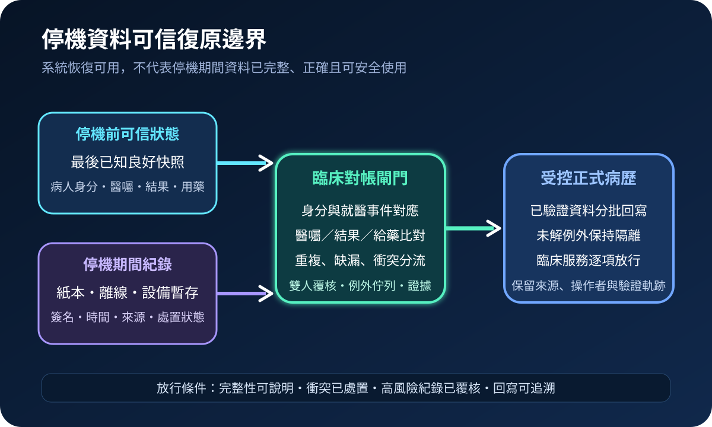
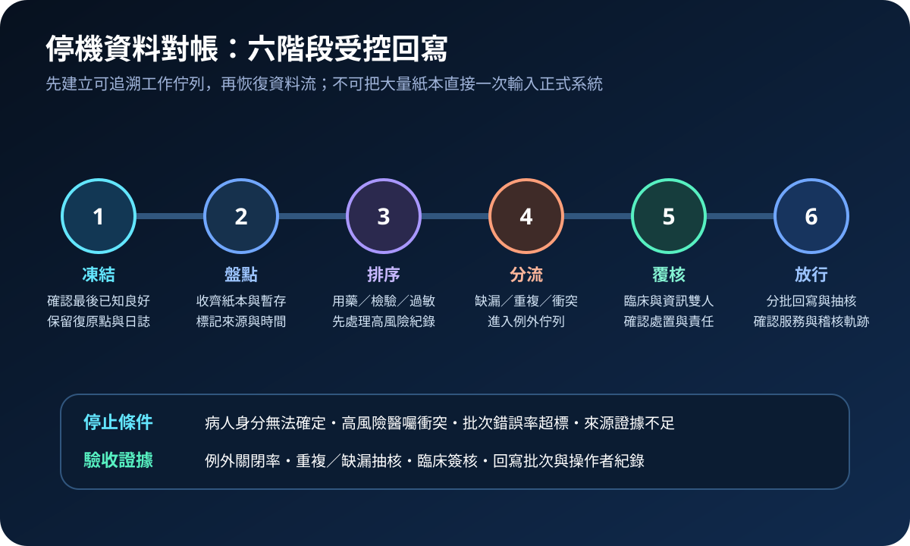
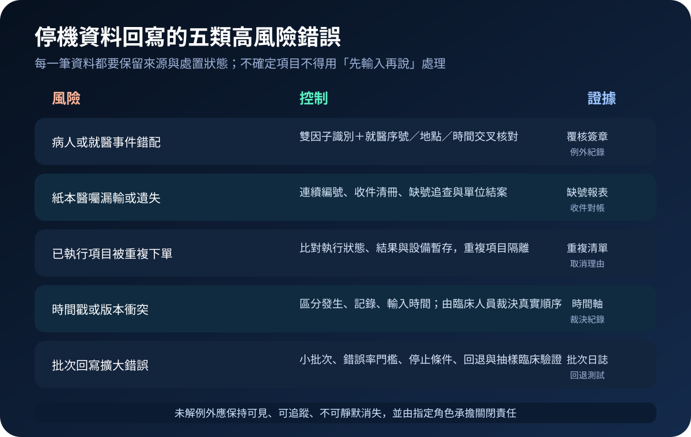

醫療資安國際觀察 · 2026-10-24
醫療系統復原後如何避免錯誤資料回灌：從停機紀錄到臨床對帳
作者：Dr. William｜醫療資訊與資安治理實務工作者
電子病歷重新上線只代表系統可用；停機期間的紙本醫囑、離線紀錄、設備暫存與口頭處置，仍須確認病人、時間、執行狀態及版本，才能安全回到正式病歷。
名詞解釋：恢復、回寫與對帳是三件事
技術恢復是讓系統、介接與資料庫回到可運作狀態；資料回寫是把停機期間產生的紀錄補入系統；臨床對帳則確認同一事件沒有缺漏、重複、錯配或互相衝突。資料完整性不只要求檔案未遭竄改，也要能說明來源、時間、責任人及最後已知良好狀態。
國際現況與適用邊界
美國 HHS ASPR TRACIE 於 2026 年發布醫療機構延長停機評估工具，供機構自願檢視政策、教育、營運備援與缺口；其電子病歷停機主題資料庫於 2025 年 12 月更新。NHS England 於 2026 年 3 月更新病人安全事件紀錄指引，將電子病歷停機、資料未正確轉移、紀錄缺漏或配對錯誤列為應納入病人安全事件判斷的數位情境。NIST SP 1800-11 則將「確認復原資料為最後已知良好狀態」列為破壞性事件後的資料完整性核心。
台灣適用原則：ASPR 工具是美國自願性規劃資源，NHS 指引適用英格蘭的病人安全事件制度，NIST 文件是技術實作參考；三者均不是台灣醫療機構的直接法定義務。台灣醫院可採用其停機、事件紀錄與完整性方法，但仍須依台灣法令、主管機關要求、院內病歷治理及臨床安全程序決定通報與驗收。
規劃：先定義資料責任與放行條件
範圍宜涵蓋病人身分、醫囑、用藥、過敏、檢驗、影像、手術、護理、轉床與出院資料。事件指揮負責宣布復原階段；資訊單位維護可信還原點、介接狀態及批次紀錄；臨床單位確認實際處置；病歷或資料治理角色管理來源、版本與例外。驗收指標可包含停機表單收齊率、高風險紀錄對帳完成率、缺號與重複件數、未解例外時效、批次錯誤率、抽核通過率及可回退性。
實作：六階段受控回寫
- 凍結：確認最後已知良好狀態，保存復原點、系統日誌與介接佇列。
- 盤點：收齊紙本、離線檔、設備暫存及人工工作清單，標記來源、時間與責任單位。
- 排序：優先處理用藥、過敏、檢驗、手術及其他會立即影響照護的紀錄。
- 分流：將缺漏、重複、身分不明、時間衝突及狀態不一致項目放入例外佇列。
- 覆核：由臨床與資訊或病歷角色共同確認事實、處置狀態、版本與回寫方式。
- 放行：小批次回寫、抽樣驗證、監看錯誤率；達停止條件時立即暫停並回退。

風險：最危險的不是慢，而是錯而不自知
常見失敗包括紙本醫囑漏輸、已執行項目重複下單、病人或就醫事件錯配、發生時間與輸入時間混淆，以及批次匯入將單筆錯誤放大。緩解方式包括連續編號、收件清冊、雙因子識別、執行狀態比對、獨立例外佇列、小批次放行、錯誤率門檻及可驗證回退。未解項目必須保持可見並指定關閉責任，不得靜默消失。

可執行清單
- 是否已定義最後已知良好狀態與停機資料的保管責任？
- 紙本與離線紀錄是否具連續編號、來源、時間及簽名？
- 高風險用藥、過敏、檢驗與手術資料是否優先對帳？
- 缺漏、重複、衝突與身分不明項目是否進入獨立例外佇列？
- 批次回寫是否設有錯誤率門檻、停止條件及可測試回退？
- 正式放行前是否完成臨床抽核、介接驗證與稽核軌跡保存？
來源
- HHS ASPR TRACIE｜Health Care Facility-Level Extended Downtime Assessment（發布：2026；查閱：2026-10-24）
- HHS ASPR TRACIE｜Electronic Health Records and Downtime Procedures（更新：2025-12-02；查閱：2026-10-24）
- NHS England｜Policy guidance on recording patient safety events and levels of harm（發布：2023-08-15；更新：2026-03-16；查閱：2026-10-24）
- NIST｜SP 1800-11 Data Integrity: Recovering from Ransomware and Other Destructive Events（發布：2020-09；查閱：2026-10-24）
內容說明
本文依健康台灣深耕計畫相關治理內容整理，並參考 HHS ASPR、NHS England 與 NIST 公開資料，提出停機資料盤點、臨床對帳、例外分流、分批回寫與驗證放行方法；不把外國制度視為台灣法定義務，也不取代主管機關公告、院內病歷治理、臨床安全程序或法律意見。